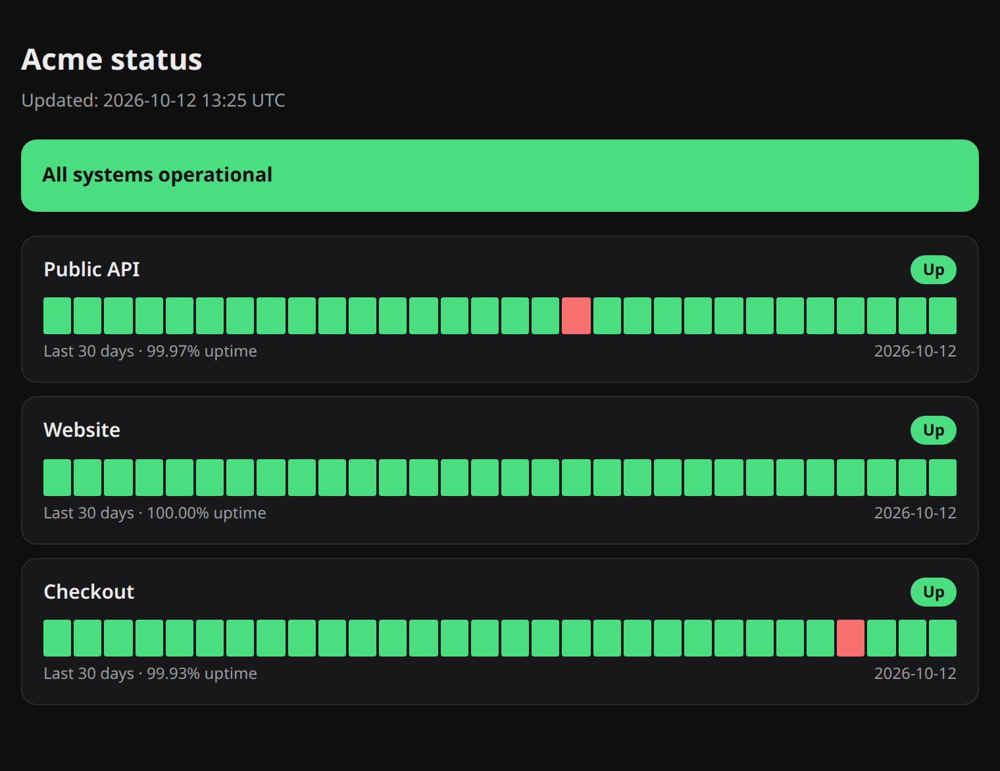
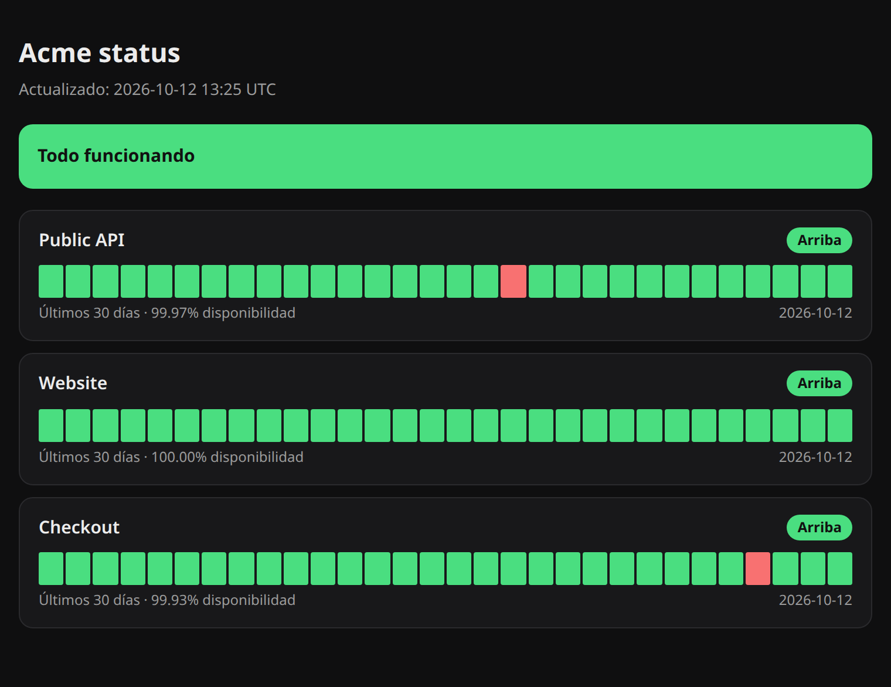
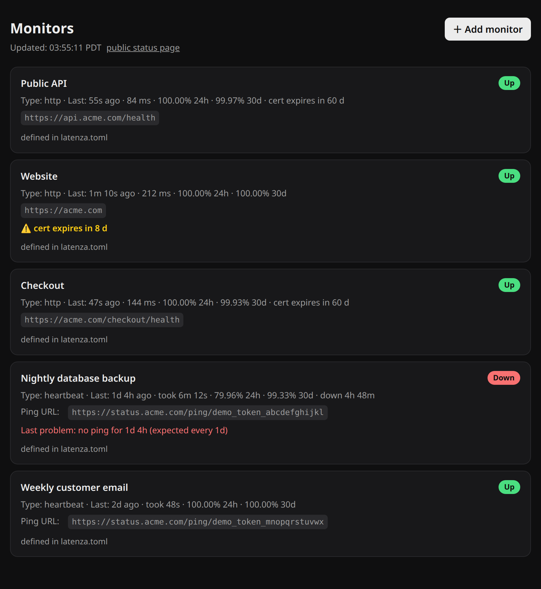
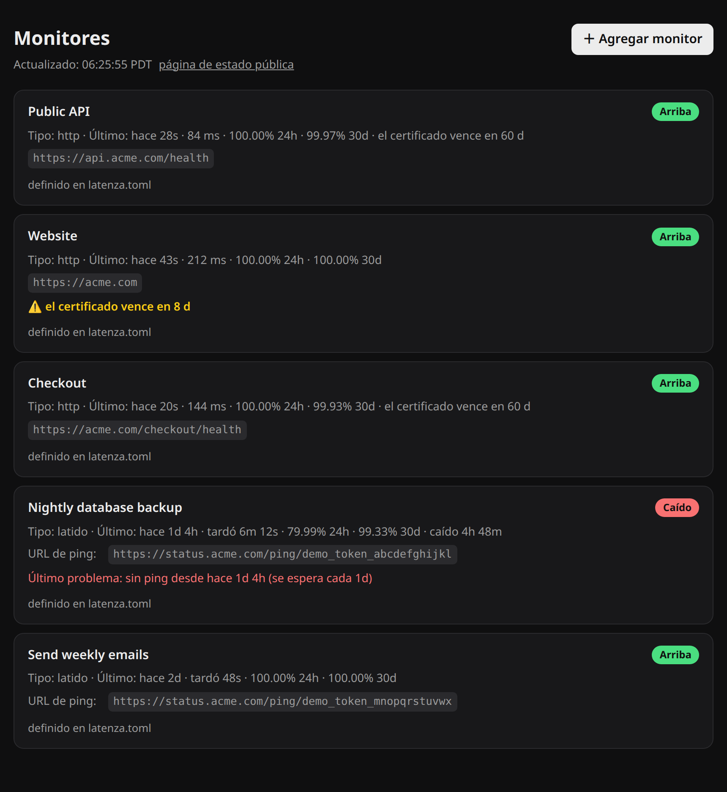

Find out the backup failed before you need it.Entérese de que el respaldo falló antes de necesitarlo.
Latenza watches your cron jobs, your website and your certificates, and tells your phone the moment something stops. One small program on your own server.Latenza vigila sus tareas programadas, su página y sus certificados, y le avisa al celular en cuanto algo se detiene. Un programa pequeño en su propio servidor.


Scheduled jobs fail without a sound.Las tareas programadas fallan sin hacer ruido.
A backup that stopped running three weeks ago looks exactly like one that runs every night, until the day you need it. Nothing crashes and nobody gets an email.Un respaldo que dejó de correr hace tres semanas se ve igual que uno que corre todas las noches, hasta el día que lo necesita. Nada truena y nadie recibe un correo.
Latenza turns that silence into an alert: each job reports in when it finishes, and a job that does not report on time is a problem you hear about.Latenza convierte ese silencio en una alerta: cada tarea avisa cuando termina, y la que no avisa a su hora es un problema del que usted se entera.
Sent with ntfy (free phone app), Discord, Slack or email. Only when something changes, with optional reminders while it stays down.Se manda por ntfy (app gratis), Discord, Slack o correo. Solo cuando algo cambia, con recordatorios opcionales mientras siga caído.
Three kinds of watching, one program.Tres formas de vigilar, un solo programa.
Cron jobs that report inTareas que avisan
Each job calls a URL when it finishes. No call on time, or a call to /fail, and you get an alert. You also see how long the job took.Cada tarea llama a una dirección cuando termina. Si no llama a tiempo, o llama a /fail, le llega la alerta. También ve cuánto tardó.
Sites and APIs that answerPáginas y APIs que contestan
Latenza calls your address as often as you say and checks the status code, an optional text and the response time. One blip does not wake you: it alerts after the failures in a row you choose.Latenza llama a su dirección cada tanto y revisa el código de respuesta, un texto opcional y el tiempo. Un tropiezo no lo despierta: avisa después de las fallas seguidas que usted escoja.
HTTPS that is about to expireHTTPS a punto de vencer
One warning, days before the certificate of a site you watch runs out.Un aviso, días antes de que venza el certificado de una página que vigila.
A public page for your customersUna página pública para sus clientes
Thirty days of history and uptime for the services you choose to show. Names and status only, never addresses or error details.Treinta días de historial y disponibilidad de los servicios que usted decida mostrar. Solo nombres y estado, nunca direcciones ni detalles de errores.
Add monitors without a restartAgregue monitores sin reiniciar
A private page, behind a password, where you add, edit and delete monitors. Or keep them in one config file if you prefer version control.Una página privada, con contraseña, donde agrega, edita y borra monitores. O déjelos en un archivo de configuración si prefiere control de versiones.
It knows when it was awaySabe cuándo estuvo ausente
If Latenza was stopped or its machine slept, a job that looks late gets its grace time before any alarm.Si Latenza estuvo apagado o su máquina dormida, una tarea que parece atrasada recibe su tiempo de gracia antes de cualquier alarma.


Everything you watch, on one page.Todo lo que vigila, en una página.
- When each one was last seen, how fast it answered and its uptime over 24 hours and 30 days.Cuándo se vio cada uno por última vez, qué tan rápido contestó y su disponibilidad en 24 horas y 30 días.
- The last problem in plain words: "no ping for 1d 4h" or "the job reported a failure (exit code 3)".El último problema en palabras claras: "sin ping desde hace 1d 4h" o "la tarea avisó que falló (código de salida 3)".
- The ping address of each job, ready to copy.La dirección de ping de cada tarea, lista para copiar.
- Works on a phone. Light or dark, following your system.Funciona en el celular. Claro u oscuro, según su sistema.
One word in front of your job.Una palabra delante de su tarea.
pulso is a 22 KB program written in C that comes with Latenza. Put it in front of any command and it reports the start, the finish and, if it fails, the exit code.pulso es un programa de 22 KB escrito en C que viene con Latenza. Póngalo delante de cualquier comando y avisa el inicio, el final y, si falla, el código de salida.
- Your job keeps its own exit code, input and output.Su tarea conserva su código de salida, su entrada y su salida.
- If Latenza is slow or unreachable, the job runs anyway.Si Latenza está lento o no contesta, la tarea corre igual.
- Works from cron and from systemd services.Funciona desde cron y desde servicios de systemd.
# crontab
0 2 * * * U=https://status.example.com/ping/TOKEN; curl -fsS -m 10 $U/start >/dev/null; if /opt/backup.sh; then curl -fsS -m 10 --retry 3 $U >/dev/null; else curl -fsS -m 10 --retry 3 $U/fail >/dev/null; fi
With pulsoCon pulso
# crontab 0 2 * * * pulso https://status.example.com/ping/TOKEN -- /opt/backup.sh
A status line on your own site.Un renglón de estado en su propia página.
One line of HTML shows how your services are doing and links to the status page. If the status server cannot be reached, the line hides itself instead of guessing.Una línea de HTML muestra cómo van sus servicios y enlaza a la página de estado. Si el servidor de estado no contesta, el renglón se esconde en vez de adivinar.
<script src="https://status.example.com/widget.js" async></script>
Running in about five minutes.Corriendo en unos cinco minutos.
You need a Linux machine that stays on, with Python 3.11 or newer. Ideally not the same machine you are watching: if both go down together, nobody tells you.Ocupa una máquina con Linux que se quede prendida, con Python 3.11 o más nuevo. De preferencia no la misma que vigila: si las dos se caen juntas, nadie le avisa.
Install itInstálelo
python3 -m venv .venv && .venv/bin/pip install -r requirements.txt cp latenza.example.toml latenza.toml
Say where alerts goDiga a dónde van las alertas
Put your ntfy topic, webhook or email in latenza.toml, then send yourself a test.Ponga su tema de ntfy, su webhook o su correo en latenza.toml y mándese una prueba.
.venv/bin/python -m latenza test-alert # your phone should buzzsu celular debe sonarStart itArránquelo
LATENZA_PASSWORD='a-long-password' .venv/bin/python -m latenza run
A systemd unit and a Caddy example for HTTPS are included.Incluye un servicio de systemd y un ejemplo de Caddy para HTTPS.
Add what you want watchedAgregue lo que quiere vigilar
Open the dashboard, press "Add monitor", and put pulso in front of your cron jobs.Abra el panel, oprima "Agregar monitor" y ponga pulso delante de sus tareas de cron.
Hosted services are good. This is for when you want your own.Los servicios en la nube son buenos. Esto es para cuando quiere el suyo.
If a hosted service fits you, use one: Healthchecks.io has a free plan and is open source. Latenza is for people who want everything in one small program, on a machine they control, in English or Spanish.Si un servicio en la nube le acomoda, úselo: Healthchecks.io tiene plan gratis y es de código abierto. Latenza es para quien quiere todo en un programa pequeño, en una máquina que controla, en inglés o en español.
| Free planPlan gratis | PaidDe paga | Where it runsDónde corre | |
|---|---|---|---|
| Healthchecks.io | 20 jobs20 tareas | $5, $20 and $80 a month$5, $20 y $80 al mes | Their servers, or yours (open source)Los servidores de ellos, o el suyo (código abierto) |
| Cronitor | 5 monitors5 monitores | $2 per monitor + $5 per user a month$2 por monitor + $5 por usuario al mes | Their serversLos servidores de ellos |
| Better Stack | 10 monitors10 monitores | From $34 a month per personDesde $34 al mes por persona | Their serversLos servidores de ellos |
| Latenza | — | Not for sale yetTodavía no está a la venta | Your server onlySolo el servidor de usted |
Prices read from each company's public pricing page on October 12, 2026. Check their sites for current numbers.Precios leídos de la página pública de cada compañía el 12 de octubre de 2026. Revise sus sitios para ver los actuales.
What Latenza does not doLo que Latenza no hace
- It is for one owner per installation: no accounts or teams.Es para un solo dueño por instalación: no tiene cuentas ni equipos.
- Built for dozens of monitors, not thousands. It has not been load-tested.Hecho para decenas de monitores, no miles. No se ha probado con carga.
- It has not had an independent security audit. Always serve the dashboard over HTTPS.No ha tenido una auditoría de seguridad independiente. Sirva siempre el panel por HTTPS.
- It checks from one place: the machine it runs on.Revisa desde un solo lugar: la máquina donde corre.
- When the dashboard refuses a monitor, the reason is shown in English.Cuando el panel rechaza un monitor, la razón sale en inglés.
Before you ask.Antes de que pregunte.
Where does my data live?¿Dónde quedan mis datos?
In one SQLite file next to the program, on your server. Latenza sends nothing anywhere except the alerts you configure.En un archivo de SQLite junto al programa, en su servidor. Latenza no manda nada a ningún lado, salvo las alertas que usted configure.
Can I buy it today?¿Puedo comprarlo hoy?
Not yet. It runs and is tested, and the price has not been set. Write to us and you will hear first.Todavía no. Funciona y está probado, y el precio no se ha decidido. Escríbanos y será de los primeros en saber.
What do I need to run it?¿Qué ocupo para correrlo?
A Linux machine that stays on, Python 3.11 or newer, and a web address if you want the status page public. To build pulso you need a C compiler and libcurl; libcurl is already on most servers, the compiler may need installing.Una máquina con Linux que se quede prendida, Python 3.11 o más nuevo y una dirección web si quiere que la página de estado sea pública. Para compilar pulso ocupa un compilador de C y libcurl; libcurl ya viene en casi todos los servidores, el compilador tal vez haya que instalarlo.
How is it tested?¿Cómo está probado?
106 automated tests against real local servers: a site that goes down and comes back, a real certificate about to expire, the real program started and stopped, pulso compiled with warnings as errors, and the dashboard driven in a real Chrome browser. Tests reduce bugs; they do not promise there are none.106 pruebas automáticas contra servidores locales reales: una página que se cae y regresa, un certificado real a punto de vencer, el programa real arrancado y detenido, pulso compilado con las advertencias como errores y el panel manejado en un navegador Chrome real. Las pruebas reducen los errores; no prometen que no haya ninguno.
Who makes it?¿Quién lo hace?
TempLogic Systems, a small company in California that builds monitoring for commercial HVAC and refrigeration. Latenza is also the tool that watches our own server and backups.TempLogic Systems, una compañía pequeña de California que hace monitoreo para HVAC y refrigeración comercial. Latenza es también la herramienta que vigila nuestro propio servidor y nuestros respaldos.
Want to know when it is ready?¿Quiere saber cuando esté listo?
Send one email. You get one reply when Latenza is for sale, and nothing else.Mande un correo. Recibe una respuesta cuando Latenza esté a la venta, y nada más.
Email usEscríbanos